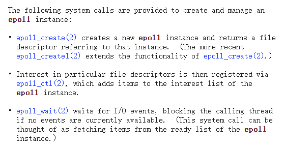
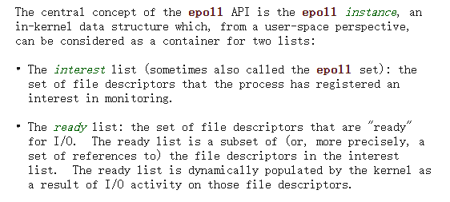
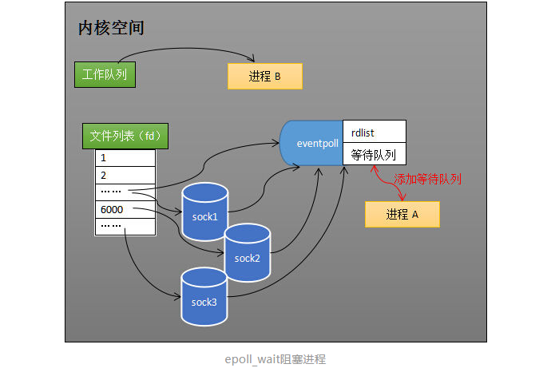

第一篇测试文章
- 封面图片
- 图片插入文件夹生成是否正确
asdfasdf
asdfasdf
sdfsadf
asdfsad
从网卡接收数据说起
- 网卡收到传输的数据
- 并将收到的数据写到内存
- cpu 中断。网卡将数据写入内存后，向 cpu 发出中断信号，cpu 执行网卡中断程序。（硬件的信号优先级高）

- 中断程序主要有两个功能。
- 将数据写到对应的 socket （与端口对应）接收缓冲区中。执行过程中对应的进程进入对应的 socket 等待队列（阻塞状态）。
- socket 接收到数据后，操作系统唤醒该进程，进入工作队列（运行状态）。
服务端如何同时监视多个 socket 的数据状态？
select
假如进程 A 需要同时监控 socket1，socket2，socket3。调用 select 后，操作系统把进程 A 分别加入到这 3 个 socket 的等待队列中。
进程A 阻塞在 select 调用上。
当任何一个 socket 有数据后，中断程序唤醒进程，将进程 A 从所有等待队列中移除，加入到工作队列中。进程 A 被唤醒后，说明至少有一个 socket 收到了数据，遍历 socket_sets 就可知道哪个有数据。
我们知道，如今的服务端需要同时管理的客户端连接数比较大。select 调用中需要多次遍历，需要同时监听的 socket 越多，select 调用的效率越低。也是因此，select 最多支持同时监听 1024 个 socket。

epoll
流程


假如进程 A 需要同时监控 socket1，socket2，socket3。先调用 epoll_create 方法创建一个 eventpoll 对象（返回一个 fd 指向该对象），和 socket 类似，eventpoll 也有自己对应的等待队列。
调用 epoll_ctl 添加/删除 监听的 socket（interest list（rbr））。操作系统将 eventpoll 对象添加到 socket1/2/3 的等待队列中。
当任何一个 socket 有数据后，中断程序为 eventpoll 的 ready list（双向链表） 添加对应的 socket 引用。唤醒等待队列中的进程。
进程 A 执行到 epoll_wait ，等待数据，如果 ready list 不为空，epoll_wait 返回，唤醒 eventpoll 等待队列中的进程。如果为空，进程 A 阻塞在 epoll_wait 调用上等待数据，操作系统会把进程 A 加入到 eventpoll 的等待队列中。

优势
引入依赖，中心仓库没有的话可以手动下载源码 install。
<dependency>
<groupId>org.csource</groupId>
<artifactId>fastdfs-client-java</artifactId>
<version>1.29-SNAPSHOT</version>
</dependency>
Client
epoll 通过一个中间层 eventpoll 对象及其对应的等待队列，进程被阻塞时只需要一次添加到等待队列中。
通过 ready list 引用有数据的 socket 。进程被唤醒后，可以直接知道哪些 socket 有数据。
private HeliosGetScoreResponse queryScores(HeliosGetScoreRequest request) {
HeliosGetScoreResponse response = new HeliosGetScoreResponse();
List<HeliosScore> heliosScores = heliosService.queryScoresTimeBetween(request.getStartTime(), request.getEndTime(), request.getFilterByAppId());
if (CollectionUtils.isEmpty(heliosScores)) {
return response;
}
Set<String> dateSet = new HashSet<>();
Map<String, List<HeliosScore>> groupByAppIdHeliosScores = heliosScores.stream().collect(Collectors.groupingBy(HeliosScore::getAppId));
for (List<HeliosScore> value : groupByAppIdHeliosScores.values()) {
value.sort(Comparator.comparing(HeliosScore::getTimeFrom));
HeliosGetScoreResponse.Score score = new HeliosGetScoreResponse.Score();
score.setNamespace(value.get(0).getNamespace());
score.setAppId(value.get(0).getAppId());
for (HeliosScore heliosScore : value) {
List<HeliosScore> splitHeliosScores = heliosScore.split();
for (HeliosScore splitHeliosScore : splitHeliosScores) {
if (splitHeliosScore.getTimeFrom().compareTo(request.getStartTime()) < 0) {
continue;
}
if (splitHeliosScore.getTimeFrom().compareTo(request.getEndTime()) > 0) {
break;
}
dateSet.add(DateUtils.yyyyMMddHHmm.formatDate(splitHeliosScore.getTimeFrom()));
if (splitHeliosScore.getScores() == null) {
splitHeliosScore.setScores("100");
log.error("查询时发现数据缺失: {}", heliosScore);
}
score.add(Math.max(0, Integer.parseInt(splitHeliosScore.getScores())), null);
}
}
response.getValues().add(score);
}
response.setDates(new ArrayList<>(dateSet).stream().sorted().collect(Collectors.toList()));
return response;
}
相关链接
- https://zhuanlan.zhihu.com/p/63179839
- https://man7.org/linux/man-pages/man7/epoll.7.html
- https://man7.org/linux/man-pages/man2/select.2.html
- 上面提到的直接引用 socket，操作系统中间都有一些间接结构，并非直接引用。
根据项目的描述，FastDFS 是一个开源的高性能分布式文件系统。 它的主要功能包括：文件存储，文件同步和文件访问，以及高容量和负载平衡。
FastDFS 框架设计思路

FastDFS 文件系统总体上划分为三个部分，Client，Tracker Server 和 Storage Server。
- Storage Server ，存储服务器，负责存